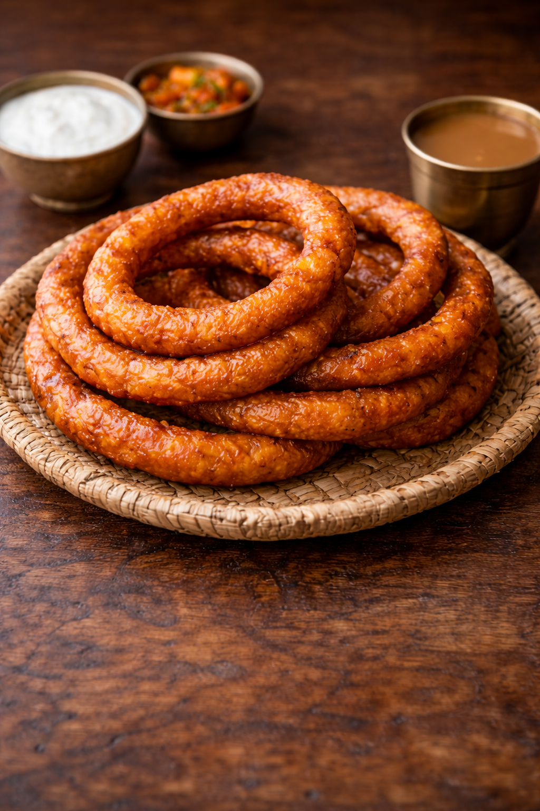

SelRoti

Sel Roti is a traditional Nepali homemade rice bread shaped like a ring. It is crispy on the outside and soft on the inside, made from rice flour, sugar, and ghee. Sel Roti is especially popular during festivals like Dashain and Tihar, and is often served with yogurt or tea.
Ingredients
- Rice flour
- Sugar
- Milk or water
- Cardamom powder
- Ghee or oil
- Ripe banana (optional)
Steps
- Mix rice flour, sugar, milk or water, and cardamom powder to make a smooth batter.
- Add mashed banana if desired for extra flavor.
- Heat oil or ghee in a deep pan.
- Pour the batter in a circular ring shape into the hot oil.
- Fry until golden brown on both sides.
- Remove and serve warm with yogurt or tea.
Home